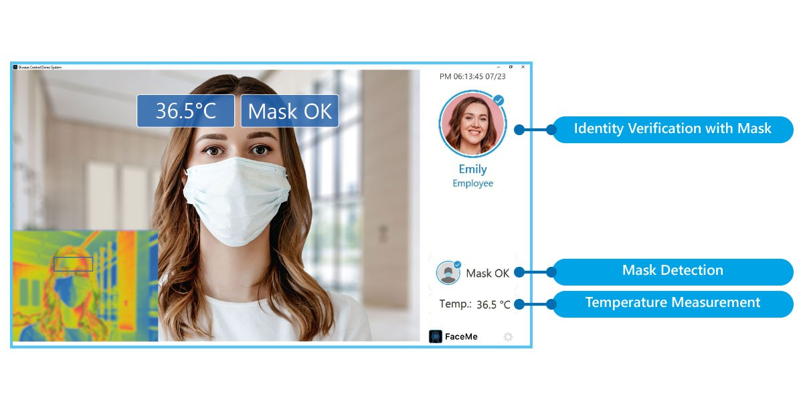

Уряд Індонезії розробляє систему розпізнавання облич для ідентифікації пасажирів, які користуються транспортною системою країни.
Згідно з інформацією Antara News, міністерство проводить пілотне тестування системи розпізнавання облич спільно з державним оператором аеропорту PT Angkasa Pura та державним оператором залізничних перевезень PT Kereta Api Indonesia.
За даними джерел видання, великий залізничний вокзал Гамбір у столиці Джакарти використовує технологію розпізнавання облич на чотирьох виходах на посадку з 17 травня 2023 року.
TRANSPORT
З розвитком біометричних технологій правоохоронні органи створюють бази даних, які поєднують розпізнавання обличчя з традиційними відбитками пальців і долонь для допомоги в розслідуванні, і користуються цими базами даних.
Деякі приклади використання таких технологій в юриспруденції:
- порівняння фото підозрюваного з відеозаписами з банкоматів для відстеження шахраїв
- порівняння фото відомого або підозрюваного терориста з відео з поліцейської камери
- порівняння фото жертви викрадення з відеозаписами з камер спостереження
Хоча розмови з людьми, які могли бачити підозрюваного або жертву, залишаються цінними, пам'ять людей, як відомо, непослідовна. Технологія розпізнавання облич доповнює ці свідчення доказами розпізнавання облич.
LAW
CyberLink представляє FaceMe® Health для детектування масок, перевірки особи та вимірювання температури для боротьби з пандемією. Нове спеціалізоване рішення для підприємств, готельно-ресторанного бізнесу, шкіл, лікарень та аеропортів, яке допоможе запобігти поширенню COVID-19.
Оскільки багато закладів знову відкриваються, часто вони вимагають, щоб люди проходили через контрольно-пропускні пункти перед входом, щоб переконатися, що вони носять маску і не мають підвищеної температури. FaceMe® Health автоматизує те, що зазвичай є громіздким процесом, безперешкодно перевіряючи людей, щоб підтвердити їхню особу, перевірити, чи носять вони маску і чи немає у них потенційної лихоманки. Якщо людина не носить маску, носить її неправильно або має незвично високу температуру, система автоматично сповіщає ключовий персонал для подальшого розслідування, створюючи економічно ефективне, ненав'язливе рішення для більш ефективного скринінгу здоров'я в той час, як світ бореться за стримування коронавірусу.
MEDICINE